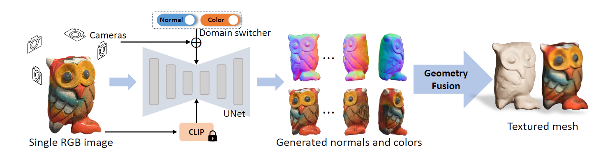
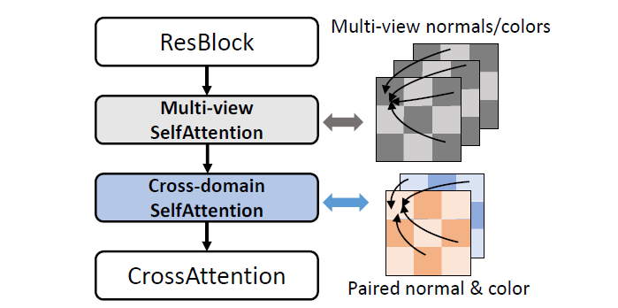

Overview
task：单张图生成3D mesh
challenges：
- SDS从2D扩散先验中获得3D geometry信息，但是对每个shape进行优化很耗时，还有几何不一致的问题；
- 快速网络推理得到3D信息，质量低，缺乏3D细节。
key ideas：
- cross-domain diffusion model，生成多视角normal map和color image；
- multi-view cross-domain attention，使得多视角一致，几何和外观两个domain之间一致；
- geometry-aware normal fusion algorithm，从多视角2D表示中提取mesh。
Related Works
2D Diffusion Models for 3D Generation
per-shape optimization: 核心是优化一个3D表示。把神经渲染生成的2D图像输入2D diffusion models或者CLIP model，计算SDS loss，用这个loss指导优化。代表作：DreamFusion, SJC（论文笔记）
缺点：
- 效率低，通常优化一个shape要几十分钟
- multi-face problem，因为缺少显式的3D监督
one-2-3-45: 用可泛化的重建方法 SparseNeuS 直接从 zero123 生成的图片中提取3D几何，但是结果质量比较低，缺少几何细节。
3D Generative Models
基于3D表示（点云，mesh，神经场），训练3D diffusion models。
问题：缺少3D数据集，大多数工作只在有限的类别上有效，如何扩展到大的数据集？
- 本文提出的方法采用2D diffuion models，可以利用预训练的先验，具有zero-shot的泛化能力。
Multi-view Diffusion Models
为了生成多视角一致的图像，一些工作将单视角图像的2D diffusion models扩展到多视角图像，但它们主要关注图像生成，并不适用于3D重建。
Xiang et al., Text2nerf: 估计深度图，生成不完整的新视角图像，然后补全。缺点：如果深度估计（由另外的深度估计模型完成）不准确，质量显著下降。
Viewset Diffusion, SyncDreamer, MVDream: 用attention layers实现多视角color images的一致性。缺点：color images没法像normal map一样显式地编码几何信息，重建结果纹理模糊，导致很难恢复几何细节，或者需要很大的计算开销。
- SyncDreamer需要稠密视角进行3D重建，但是几何比较差，纹理模糊。
- MVDream需要耗时的优化，多视角蒸馏需要1.5小时。
- 本文提出的方法可以在2分钟内重建高质量的纹理网格。
问题定义
将3D资产的分布定义为对应的2D多视角normal maps和color images的联合分布。目标是学习一个模型$f$，能够合成对应一组相机位姿的normal maps和color images。
优点：
- 可以用预训练的有很强先验的2D diffusion models，可以实现zero-shot的泛化性；
- normal maps可以刻画出表面的波动和变化，真实的几何细节。
方法

Consistent Multi-view Generation
和SyncDreamer, MVDream一样，各个视角之间用attention来交换信息。做法是将原来的self-attention layers扩展到全局，使不同视角间建立联系。
Cross-Domain Diffusion
如何将2D diffusion model扩展到一个以上的domain？
- 简单的想法是对UNet的输出加4个通道，表示增加的normal domain；但问题是收敛速度慢，泛化性差；原因可能是通道增加对预训练的权重有扰动，造成模型遗忘。
- 由于可以把联合分布因式分解为两个条件分布，也可以先训练一个diffusion model生成normal maps，然后训练另一个diffusion model以normal maps作为条件生成color images（或者反过来）；但问题是two-stage framework有一定复杂性，计算开销大，而且表现会变差。
- 最终的解决方案：domain switcher，记为$s$。$s$是一个一维向量，标记不同domain。先对$s$进行位置编码，然后和time embedding进行concat。这个操作不会明显改变预训练先验，可以快速收敛，并能稳定地泛化。
- 为了让两个domain之间一致，加了一个cross-domain attention，让生成的几何和外观align。cross-domain attention的结构和原来的self-attention layer结构一致，在transformer block中，cross-domain attention加在cross-attention layer前。

Textured Mesh Extraction
通过优化有向距离场（SDF），提取显式3D几何。比起mesh，SDF具有紧凑、可微的优点。但是不能直接用现有的SDF-based重建方法（例如NeuS），因为这些方法适用于真实获得的图像，而且需要稠密的输入视角。而生成视角相对稀疏，生成的normal maps和color images可能在一些像素上有一些偏差，导致优化得到畸变的几何。
geometric-aware optimization 目标函数：
其中$L{rgb}$表示MSE loss，计算渲染出的图片和生成的图片的误差；$L{mask}$表示二元交叉熵损失，计算渲染出的mask和生成的mask（用分割模型对生成的normal maps或者color images处理得到）的误差；$R_{eik}$表示eikonal惩罚项，使得SDF梯度大小是单位长度；$R_{sparse}$表示稀疏惩罚项，避免SDF的漂浮物；$R_{smooth}$表示光滑惩罚项，使SDF的梯度在3D空间中光滑。
利用SDF的可微性质，SDF的法线$\hat{g}_k$可以通过对SDF求二阶导得到。$L_{normal}$用来监督3D几何：
其中$w_k$是geometric-aware weight。由于一个3D点在不同视角下都可以被看见，就会受多个法线影响，这些法线之间必须有一致性。法线和视线方向之间角度大的会被赋予更高的权重。
另一个trick叫outlier-dropping loss。由于mask和color images存在一些不精确的地方，会在优化过程中积累，导致表面的噪声和洞。outlier-dropping loss的做法是在每个iteration中对所有采样光线的color errors降序排序，按预先设定好的百分比去除最大的errors。因为错误的预测缺乏和其他视角的一致性，在优化过程中更难被最小化，所以产生了最大的errors。